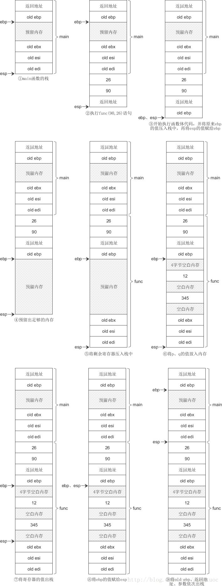
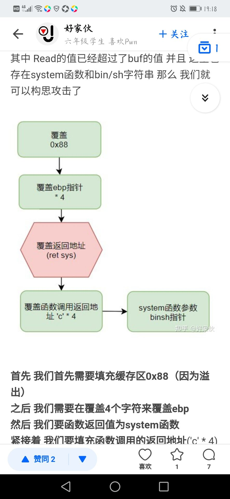
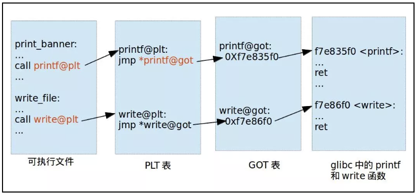
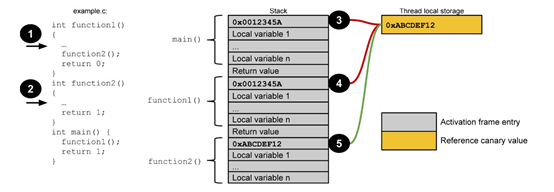

IDA 基操
- shift+F12 查看string信息 (通常可以看到重要的信息 )
- Alt + T 查找带有目标字符串的函数
- F5 查看 C代码
- Ctrl + F 在函数框中 搜索函数
- 空格键 流程图与代码 来回切换.
- Ctrl + S 打开segment表,调出程序的表段
一些段
- BSS段：BSS段（bss segment）通常是指用来存放程序中未初始化的全局变量的一块内存区域。BSS是英文Block Started by Symbol的简称。BSS段属于静态内存分配。
- 数据段：数据段（data segment）通常是指用来存放程序中已初始化的全局变量的一块内存区域。数据段属于静态内存分配。
- 代码段：代码段（code segment/text segment）通常是指用来存放程序执行代码的一块内存区域。这部分区域的大小在程序运行前就已经确定
- 并且内存区域通常属于只读, 某些架构允许代码段为可写，即允许修改程序。在代码段中，也有可能包含一些只读的常数变量，例如字符串常量等。
- 首先利用了mprotect函数修改内存权限，然后利用read读取shellcode到该内存区域。整体是利用了ROP链的思想，由于开启了NX保护，所以不断利用retn返回地址来达到调用函数，注入shellcode的目的。
mprotect函数:原型如下
int mprotect(void *addr, size_t len, int prot);
addr 内存启始地址
len 修改内存的长度
prot 内存的权限：prot取值：
1）PROT_READ：表示内存段内的内容可写；
2）PROT_WRITE：表示内存段内的内容可读；
3）PROT_EXEC：表示内存段中的内容可执行；
4）PROT_NONE：表示内存段中的内容根本没法访问。
需要指出的是，指定的内存区间必须包含整个内存页（4K）。区间开始的地址start必须是一个内存页的起始地址，并且区间长度len必须是页大小的整数倍。
人话：最后三位要000
exp脚本 pwn库
栈溢出
函数调用栈
栈帧格式：
- 高
- 参数
- 返回地址
- ebp
- 局部变量
- esp
- 低
首先将被调用函数（callee）的参数按照逆序依次压入栈内。如果被调用函数（callee）不需要参数，则没有这一步骤。这些参数仍会保存在调用函数（caller）的函数状态内，之后压入栈内的数据都会作为被调用函数（callee）的函数状态来保存。
然后将调用函数（caller）进行调用之后的下一条指令地址作为返回地址压入栈内。这样调用函数（caller）的 eip（指令）信息得以保存
再将当前的ebp 寄存器的值（也就是调用函数的基地址）压入栈内，并将 ebp 寄存器的值更新为当前栈顶的地址。这样调用函数（caller）的 ebp（基地址）信息得以保存。同时，ebp 被更新为被调用函数（callee）的基地址。
将调用函数的基地址（ebp）压入栈内，并将当前栈顶地址传到 ebp 寄存器内
再之后是将被调用函数（callee）的局部变量等数据压入栈内。
将被调用函数的局部变量压入栈内
将被调用函数的局部变量弹出栈外
将调用函数（caller）的基地址（ebp）弹出栈外，并存到 ebp 寄存器内
再将返回地址从栈内弹出，并存到 eip 寄存器内。这样调用函数（caller）的 eip（指令）信息得以恢复。
将被调用函数的返回地址弹出栈外，并存到 eip 寄存器内


指令
每个函数调用过程在栈中被抽象成一帧
CALL指令的步骤：首先是将返回地址（也就是call指令要执行时EIP的值）压入栈顶，然后是将程序跳转到当前调用的方法的起始地址。执行push和jump指令。
RET指令则是将栈顶的返回地址弹出到EIP，然后按照EIP此时指示的指令地址继续执行程序。
32位程序传参不用借用寄存器，但是为了能够继续控制程序，需要用到ret指令
而每次调用函数后都是返回到pop_3_ret中执行，是用该段汇编代码弹出压入栈中的三个参数来达到栈平衡。LEAVE指令是将栈指针指向帧指针，然后POP备份的原帧指针到EBP。
Leave等价于：
mov ebp esp
pop ebpget read setvbuf write
栈溢出。填满栈，再写入跳转地址
READ() 函数： ssize_t read(int fd,void*buf,size_t count)
fd: 是文件描述符，对应0
buf: 为读出数据的缓冲区；
count: 为每次读取的字节数（是请求读取的字节数，读上来的数据保存在缓冲区buf中，同时文件的当前读写位置向后移）read函数会读取我们在屏幕上输入的内容，但不会检查内容的多少，全部复制到buf里，如果超出buf的范围，会造成溢出
int setvbuf(FILE *stream, char *buffer, int mode, size_t size)
将使得打开文件后，用户可建立自己的文件缓冲区 size 就是大小ssize_t write(int fd, const void *buf, size_t nbyte);
fd：文件描述符；
buf：指定的缓冲区，即指针，指向一段内存单元；
nbyte：要写入文件指定的字节数；
返回值：写入文档的字节数（成功）；-1（出错）NX（又称DEP）
数据执行保护。可写的不可执行，可执行的不可写
libc
libc是Linux系统下的c函数库，既然是函数库就会存在system函数，binsh参数
找到库里面的偏移量，就可以执行后门函数
xxx@plt -> xxx@got -> xxx@plt -> 公共 @plt -> _dl_runtime_resolve
存在溢出条件
题目没有system等后门函数，并且开启了NX保护
解题思路
首先要明白我们的目的是找到system函数以及binsh参数的地址。
基地址：基地址在同一次运行时是相同的，但第二次运行就不同了，所以造成了函数的真正地址一直在变，但即使一直在变，最后三位却一直相同。这样只要知道某个函数的某一次地址，利用它的后三位，然后在这个网站，就能获得libc版本
plt存放的是进入这个函数的函数地址
got表中存放的是这个函数的真正地址。
- 我们可以利用puts函数，write函数等函数打印它自己的真正的地址，然后找到libc版本，基地址，然后找到system函数地址
puts_plt_addr = e.plt[“puts”]
puts_got_addr = e.got[“puts”]
main_addr = e.symbols[“main”] （打印函数用symbols） - 结合栈帧构造payload
格式化字符串漏洞
- 在C语言中，有很多输入输出函数使用格式化字符串作为规范输入输出的格式。 c语言允许以$符号作为变量名的开头
- char str[12]=”fmtstr”;
printf(str);
将字符串的输入权交给用户就会有问题
这时，如果这个str是我们用户输入可控的，那么这就存在了一个格式化字符串漏洞,这时攻击者将有机会对任意内存地址进行读写操作； - printf(“%d” “%x” “%c” “%s”,a,b,c,d);
- %n 到目前为止所输出的字符数(把一个int值写到指定的地址去)
#include<stdio.h>
int main() {
int a,b,c;
printf(“ABC%nEFG%n\n”,&a,&b);
printf(“%123c%n\n”,’a’,&c);
printf(“a=%d b=%d c=%d\n”,a,b,c);
return 0;
}
- %n 到目前为止所输出的字符数(把一个int值写到指定的地址去)
输出结果：a=3 b=6 c=123
这是因为printf函数并不知道参数个数，它的内部有个指针，用来索检格式化字符串。对于特定类型%，就去取相应参数的值，直到索检到格式化字符串结束。
所以尽管没有参数，上面的代码也会将format string 后面的内存当做参数以16进制输出。这样就会造成内存泄露。
#include <stdio.h>
int main()
{
char a[100];
scanf(“%s”,a);
printf(a); // a 如果是%x%x%x,就会打印后面三个十六进制地址值
return 0;
}
Canary保护机制：
1、 在所有函数调用发生时，向栈帧内压入一个额外的随机 DWORD，这个随机数被称作“canary”，
用 IDA 反汇编时，又被称作“Security Cookie”。2、 canary 位于 EBP 之前，系统还会在.data 的内存区域中存放一个 canary 的副本。
3、 当栈中发生溢出时，canary 将被首先淹没，之后才是 EBP 和返回地址。
4、 在函数返回之前，系统将执行一个额外的安全验证操作，称作 Security Check。
5、在 Security Check 过程中，系统将比较栈帧中原先存放的 canary 和.data 中副本的值，若两者不同，则说明栈中发生了溢出，系统将进入异常处理流程，函数不会正常返回。
6根据原理看出 canary code 不能防止函数返回地址前的缓冲区溢出。
- 可利用未保护内存绕过 canary 机制，由于缓冲区不是 8 字节类型且大小
- 不大于 4 个字节可通过缓冲区不大于 4 字节的栈溢出直接绕过，此部分不经过 canary 保护
- 可能根据不同机器栈地址的增长机制或不同分配影响 canary code 的保护功能。
gdb
- (gdb)x/1xb 0x7fffffffd708 显示0x7fffffffd708（address）处1个(n)1字节(u)的内容，以十六进制(x)表示；
- 1:显示一个 x：以十六进制显示 b：一个字节
- objdump 反汇编代码
ROPgadget工具
- ROPgadget –binary rop –only ‘pop|ret’ | grep ‘eax’
查找可存储寄存器的代码 - ROPgadget –binary rop –string “/bin/sh”
查找字符串 - ROPgadget –binary rop –only ‘int’
查找有int 0x80的地址其他
- strcmp()比较的字符串如果长度为0，返回 0
- 有时直接栈溢出(函数远端无法正常退出)，不能正确得到结果，原因是必须维护好栈。所以找一个函数来退出。于是可以利用exit函数
- 阅读程序有时候可以发现没有ebp。eg：get_started_3dsctf_2016
- 栈最下面的sr就是ebp和返回地址哦
- r.sendline(asm(shellcraft.sh()))
#shellcode可以利用pwntools直接生成
#shellcode=asm（shellcraft.sh()） - 查看带有?标志的地址，说明未使用过。
- (以0xf7打头的地址是libc中函数的地址，而以0x80打头的是elf文件本身的plt地址)